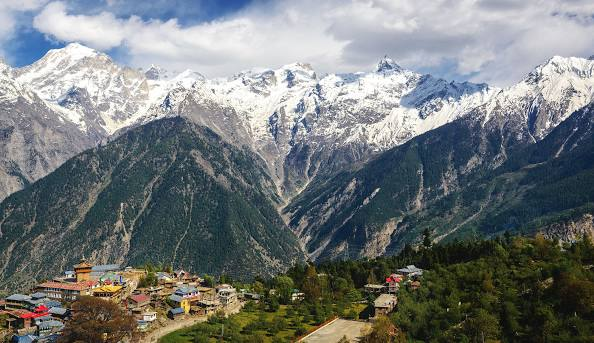

Shimla is popularly known as the queen of hills that spread across seven hills in the northwest Himalayas.
It is situated among lush valleys and forests of rhododendron, oak, and pine,
it is the capital of Himachal Pradesh that was known as the summer capital of colonial India.
Manali is all about an open valley with a deodar and pine forest cover,
freshwater streams and peaks perennially covered with snow
making it a perfect place to unwind and recharge.
Not only does it have some fine staying places,
but there also many spiritual retreats that call for a visit.
Kangra takes pride in being home to the Katoch dynasty as one of the oldest surviving royal dynasties in the world.
The famous temple of Ma Chamunda is in Kangra district of Himachal Pradesh, India.
It is around 10 km west of Palampur, on the Baner river. Around 400 years ago the king and a Brahmin
priest prayed to Devi for permission to move the temple to some easily accessible location.
Chamba is a town in the Chamba district in the Indian state of Himachal Pradesh. According to the 2001 Indian
census, Chamba has a population of 20,312 people. Located at an altitude of 1,006 metres (3,301 ft) above
mean sea level, the town is situated on the banks of the Ravi River
(a major tributary of the Trans-Himalayan Indus River), at its confluence with the Sal River

Kinnaur Valley is one of the most beautiful valleys and one of the 12 districts of Himachal Pradesh.
It is renowned for apples and orchards, lovely meadows covered with dense woods and
the most adventurous routes that cut through these valleys for a mesmerizing road trip.
A land of low lying hills with dense pine forests and fertile valleys, River Beas meanders
its course through middle of the district. Growing some of the finest mangoes, Hamirpur is also identified as
the land of the brave for the contribution and sacrifices soldiers from the region have made in service of the nation.
Kullu is famous for its festivities during Dussehra (September–October), when the story of the epic poem Ramayana is reenacted.
The town is a gateway to the scenic Kullu Valley,which extends northward to
the source of the Beas River at Rohtang Pass.
Gobind Sagar is one of the largest manmade lakes of the country that has reshaped the identity of Bilaspur and turned into a attractive tourist destination.
It has become a hub for water sports activities, boating and an excellent site for game fishing.
Bilaspur was the capital of a state of the same name founded in the 7th century, also known as Kahlur. The ruling dynasty were Chandela Rajputs, who claimed descent from the rulers of Chanderi in present-day Madhya Pradesh.
Solan was the capital of the erstwhile princely state, Baghat. It is known as the “Mushroom city of India” because of the vast mushroom farming in the area as well as the Directorate of Mushroom Research (DMR) situated at Chambaghat.
A defining feature of Solan, is its ancient temples and monasteries. The Shoolini Mata Temple and Jatoli Shiv Temple are popular attractions for tourists. One of the most famous monasteries in this region is the Yundung Monastery.
The city has one of the oldest breweries in the country, and also has a 300-year-old fort located at the top of a hill.
It is known as the gateway to Himachal Pradesh and is also a major district. This city is set on the banks of the gurgling Swan river.
Located at an elevation of 369 m above sea level, the main tourist sites in the city are Pong Dam, Kila Baba Bedi Ji, Chintpurni Temple, Thaneek Pura, and many more.
Within the state it has borders with Kangra, Hamirpur and Bilaspur.
The region is a mix of both plain and hilly
Sirmur (also spelled as Sirmor, Sirmaur, Sirmour, or Sirmoor) was an independent kingdom in India, founded in 1616, located in the region that is now the Sirmaur district of Himachal Pradesh. The state was also known as Nahan, after its main city, Nahan. The state ranked predominant amongst the Punjab hill States.
It is a thriving centre of Buddhism and home to several monasteries which are repositories of ancient murals, thangkas, wood carvings and massive statues of Guru Padmasambhava, the missionary who introduced Buddhism to Lahaul, Spiti and Tibet.